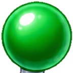
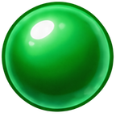

摇杆球头接缝已修复
Unity Play 验证通过清除球头底部残留的旧金属短杆，保留独立杆身、透明边缘与现有动画时序。

清理前 · 底部金属残留
清理后 · 完整绿色弧线动画接缝特写
Unity 渲染原始截图；时间为游戏内时间。点击查看完整画面。
验证覆盖：101 个动画采样点、积分不足与空闲、重复点击、两次抽奖与领奖、合成 2000 筹码庆祝与恢复玩法。查看验证结果
验证环境：Unity 2022.3.62f3c1，独立测试存档；本次未进行 Android 设备安装验证。